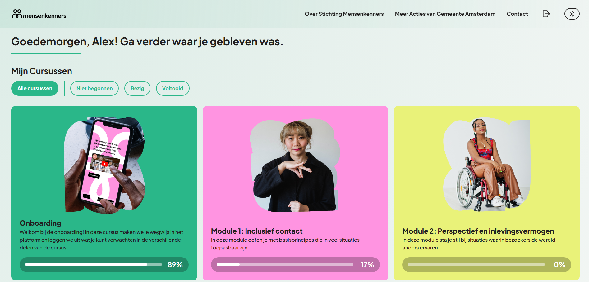
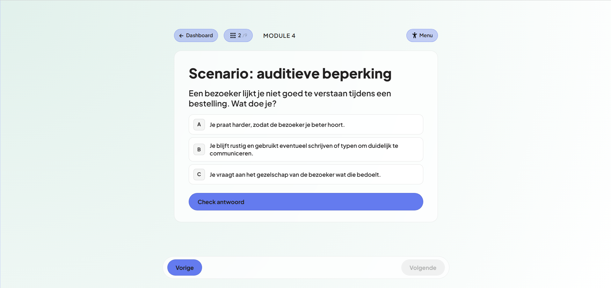

MensenkennersInclusive learning platform.



This project was a group project for Mensenkenners and INK, two organizations that run online courses for municipal employees about working with people with disabilities. They already had a prototype built in Typeform, and our job was to turn that into something more interactive and engaging, while each of us also chased our own personal learning goals along the way. We worked through the usual process, research, ideation, prototyping, testing, iterating, and kept the client in the loop the whole time, showing progress regularly and folding their feedback straight back into the design.
My main focus ended up being the technical side. Together with a teammate I looked into ways to store and manage all the course data without building a full backend from scratch, and we landed on Supabase. I set up the database, built the tables, and connected everything through its API: my first real experience working with a database, and honestly a bit of a leap for me.
To make the content easier to maintain, I helped turn all the course material into a structured JSON format instead of hardcoding questions and answers straight into the app. Modules, questions, and answers all load in dynamically now, which makes the whole thing way easier for the client to update later without touching any code.
One of my favorite parts to build was the disability simulator: a little tool that lets you experience how certain disabilities affect everyday computer use, things like blurred vision, lower contrast, a delayed cursor, or a simulated hand tremor. It had to walk a line between educational and respectful, so I spent a lot of time getting the feel right. The client was actually a bit unsure about it at first, but once they tried it themselves they were sold.
Beyond that I spent time polishing the overall experience: small animations, responsive layouts, and making sure interactive elements held up on both desktop and mobile. This project also pushed my JavaScript further than anything before it, with a lot of DOM manipulation, API calls, and dynamic rendering. Near the end I went back and refactored a big chunk of the codebase into reusable components, which took one of the largest files from about 2,600 lines down to 1,500.
Overall this project stretched me in pretty much every direction: databases, APIs, accessibility, responsive design, front-end architecture, all things I hadn't touched much before. More than the technical skills though, it made me more comfortable jumping into stuff that looked intimidating at first, which I think is the bigger win here.